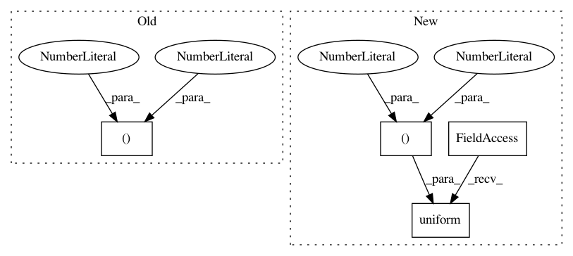

a37dcd46cba88dfd0478b601fb8fbf9b425780c0,example/automatic-mixed-precision/amp_model_conversion.py,,,#,50
Before Change
net.export("{}-amp".format(args.model), remove_amp_cast=False)
if args.run_dummy_inference:
logger.info("Running inference on the mixed precision model with dummy inputs, batch size: 1")
result_after = net.forward(mx.nd.zeros((1, 3, 224, 224), dtype=np.float32, ctx=mx.gpu(0)))
result_after = net.forward(mx.nd.zeros((1, 3, 224, 224), dtype=np.float32, ctx=mx.gpu(0)))
logger.info("Inference run successfully")
After Change
if args.model in segmentation_models:
shape = (1, 3, 480, 480)
elif args.model in calib_ssd_models:
shape = (1, 3, 512, 544)
elif args.model in calib_inception_models:
shape = (1, 3, 299, 299)
else:
shape = (1, 3, 224, 224)
net = gluoncv.model_zoo.get_model(args.model, pretrained=True)
net.hybridize()
result_before1 = net.forward(mx.nd.random.uniform(shape=shape))
net.export("{}".format(args.model))
net = amp.convert_hybrid_block(net, cast_optional_params=args.cast_optional_params)
net.export("{}-amp".format(args.model), remove_amp_cast=False)
In pattern: SUPERPATTERN
Frequency: 3
Non-data size: 4
Instances
Project Name: apache/incubator-mxnet
Commit Name: a37dcd46cba88dfd0478b601fb8fbf9b425780c0
Time: 2019-11-07
Author: anirudh2290@ufl.edu
File Name: example/automatic-mixed-precision/amp_model_conversion.py
Class Name:
Method Name:
Project Name: chainer/chainercv
Commit Name: b60ad484e8f97822cd67df8d3edd1dd475dfdbda
Time: 2017-05-07
Author: yuyuniitani@gmail.com
File Name: tests/utils_tests/bbox_tests/test_non_maximum_suppression.py
Class Name: TestNonMaximumSuppressionOptions
Method Name: setUp
Project Name: apache/incubator-tvm
Commit Name: c94623ad0dac5fa5ce7a9a3c4ecb794351ebc610
Time: 2020-10-29
Author: anshuman.t@huawei.com
File Name: tests/python/frontend/tflite/test_forward.py
Class Name:
Method Name: test_forward_relu